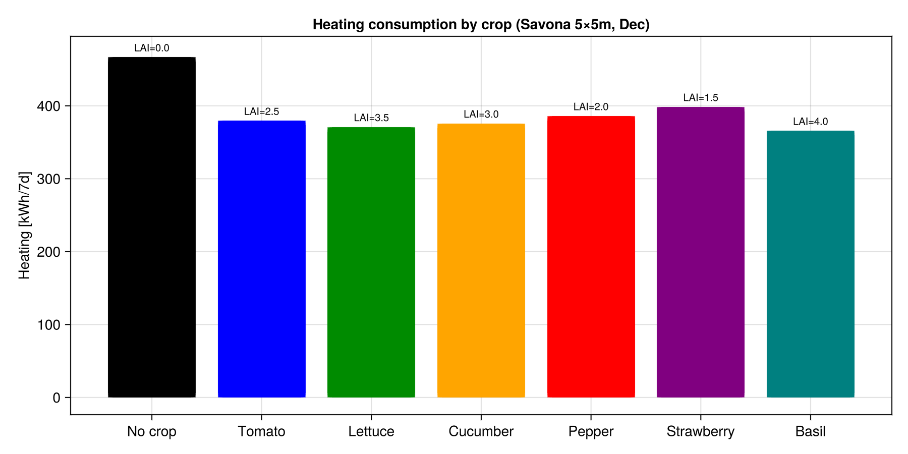

Tutorial: Crop Climate Requirements & Productivity Index
GreenhousesJL includes crop-specific temperature profiles and a productivity index to evaluate the trade-off between energy savings and plant growth.
Concept
Each crop has optimal day/night temperatures that vary by growth phase. Deviating from these reduces growth. Two factors affect productivity:
- Temperature effect, how far the actual temperature is from the optimum
- Light effect, how much PAR is blocked by PV panels
Productivity = f_temperature(T_air) × f_light(PAR_reduction)Crop temperature profiles
| Crop | T_opt day | T_opt night | T_base | T_ceil | Source |
|---|---|---|---|---|---|
| Tomato | 24 °C | 17 °C | 10 °C | 35 °C | Heuvelink (1996), Vanthoor (2011) |
| Lettuce | 20 °C | 12 °C | 4 °C | 30 °C | Seginer et al. (1991) |
| Cucumber | 26 °C | 19 °C | 12 °C | 38 °C | Marcelis (1994) |
| Pepper | 23 °C | 17 °C | 10 °C | 35 °C | Vanthoor (2011) |
| Strawberry | 21 °C | 13 °C | 5 °C | 32 °C | — |
| Spinach | 17 °C | 8 °C | 2 °C | 25 °C | Seginer et al. (1991) |
| Rose | 22 °C | 15 °C | 5 °C | 33 °C | — |
Growth phases
Temperatures vary by phase (setpoint changes automatically):
| Phase | Typical duration | Tomato T_day | Tomato T_night |
|---|---|---|---|
| Seedling | 0–14 days | 24 °C | 18 °C |
| Vegetative | 14–42 days | 24 °C | 17 °C |
| Flowering | 42–56 days | 22 °C | 16 °C |
| Fruiting | 56+ days | 24 °C | 17 °C |
Growth response function
The normalized growth rate $f(T) \in [0, 1]$ uses a beta-function shape (Yin et al. 1995):
\[f(T) = \left(\frac{T - T_{base}}{T_{opt} - T_{base}}\right)^\alpha \times \left(\frac{T_{ceil} - T}{T_{ceil} - T_{opt}}\right)^\beta\]
where $\alpha$ and $\beta$ ensure $f(T_{opt}) = 1$.
Tomato growth response curve
| T (°C) | f(T) | Interpretation |
|---|---|---|
| 10 | 0.00 | No growth (base temperature) |
| 15 | 0.53 | Half growth |
| 20 | 0.90 | Near-optimal |
| 24 | 1.00 | Optimal |
| 28 | 0.89 | Slight heat stress |
| 33 | 0.39 | Severe heat stress |
| 35 | 0.00 | Growth stops (ceiling) |
Productivity index
using GreenhousesJL
cc = TomatoClimate()
# Simulated temperature and irradiance series (168 hours = 7 days)
T_air = [...] # °C
I_glob = [...] # W/m²
# With 30% PV coverage (opaque panels)
prod_T, prod_light, prod_total = productivity_index(T_air, I_glob, cc;
PAR_reduction=0.30)
println("Temperature effect: $(round(prod_T*100))%")
println("Light effect: $(round(prod_light*100))%")
println("Total productivity: $(round(prod_total*100))%")Example: Lettuce scenarios
| Scenario | T setpoint | PV | Prod_T | Prod_light | Total |
|---|---|---|---|---|---|
| Optimal | 20 °C | None | 100% | 100% | 100% |
| Energy saving | 14 °C | None | 80% | 100% | 80% |
| Hot greenhouse | 28 °C | None | 48% | 100% | 48% |
| Optimal + PV 30% | 20 °C | 30% opaque | 100% | 70% | 70% |
| Energy saving + PV 50% | 14 °C | 50% opaque | 80% | 50% | 40% |
Optimal setpoint (dynamic)
The optimal_setpoint function returns the ideal temperature based on crop, growth phase, and time of day:
cc = TomatoClimate()
# Day (I_glob > 50 W/m²), vegetative phase (day 25)
T_sp_day = optimal_setpoint(25.0 * 86400, 200.0, cc; crop_name="tomato")
# → 24.0 °C
# Night (I_glob = 0), flowering phase (day 50)
T_sp_night = optimal_setpoint(50.0 * 86400, 0.0, cc; crop_name="tomato")
# → 16.0 °CTrade-off: Energy vs Productivity
The key design question in greenhouse climate management is:
How much growth are you willing to sacrifice for energy savings?
Example with tomato + gas boiler + Brussels winter:
| Strategy | Setpoint | E_fuel | CO2 | Productivity |
|---|---|---|---|---|
| Maximum growth | 24 °C day / 17 °C night | 12.5 kWh/m² | 2.56 kg/m² | 100% |
| Balanced | 20 °C constant | 8.6 kWh/m² | 1.77 kg/m² | 90% |
| Energy priority | 16 °C constant | 7.3 kWh/m² | 1.50 kg/m² | 65% |
| Minimum heating | 12 °C constant | 4.8 kWh/m² | 0.98 kg/m² | 22% |
The balanced strategy (20 °C) saves 31% energy with only 10% growth penalty, this is typically the economic optimum.

Under-bench heating strategy
With pipes under growing benches (soilless culture), the root zone stays warm even when air temperature is lowered:
- Lower air setpoint by 3–5 °C → 10–25% energy savings
- Root zone maintained at optimal temperature → minimal growth penalty
Source: Kim et al. (2024), Discover Sustainability, 65% propane reduction with bench-top root-zone heating.
Available functions
# List all crop profiles
list_crop_climates()
# Get a specific profile
cc = TomatoClimate() # or LettuceClimate(), CucumberClimate(), etc.
# Growth response at a given temperature
f = f_growth_temperature(22.0, cc) # → 0.97
# Dynamic setpoint
T = optimal_setpoint(t_seconds, I_glob, cc; crop_name="tomato")
# Productivity index
prod_T, prod_light, prod_total = productivity_index(T_vec, I_vec, cc; PAR_reduction=0.3)